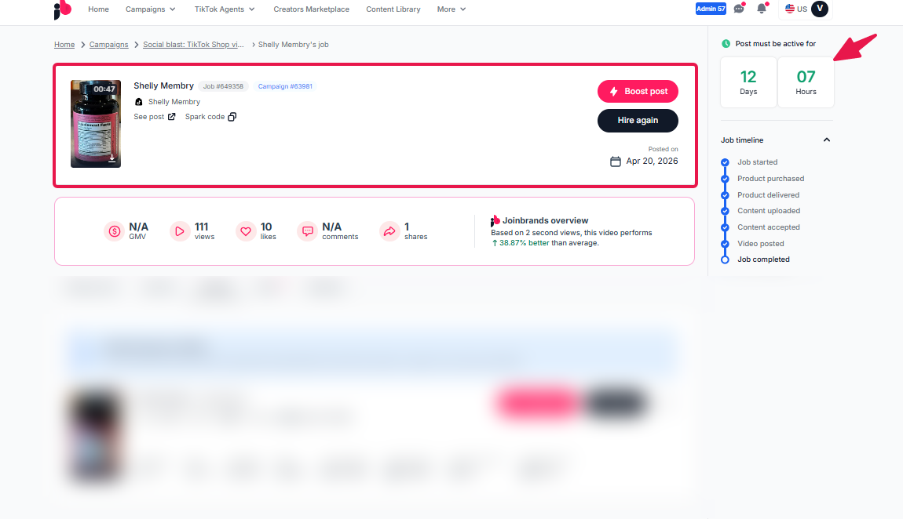
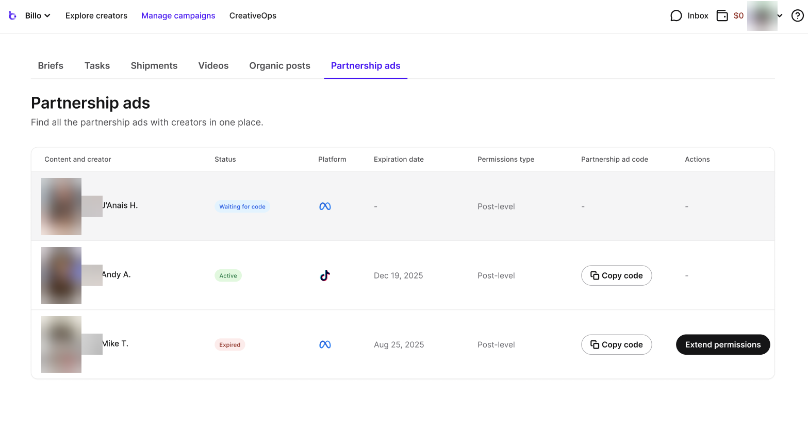
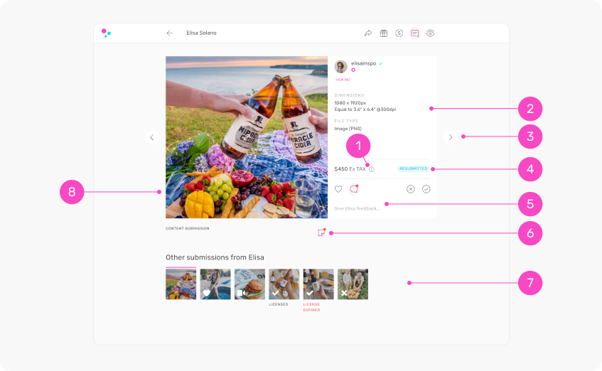

Ninety Days, One Surface
Where a brand like Simple downloads each creator's video, sees when its 90 days of usage rights end, and asks for more time. Built in the real portal chrome, reusing the review popup.
The ask
Julia, Sep 30, thinking out loud. Her words are paraphrased, not quoted.
- One surface where the brand that got content (Simple) goes to download the file for each creator.
- The clock on the same surface. Rights run 90 days from the day the creator posts. Show when each one ends, "maybe even a little calendar widgety thing". She thinks a previous platform of Simple's, probably Insense, had something like it.
- An expired state. If the 90 days pass and the brand did nothing, the portal shows it the next time they log in.
- An email before it ends. "Let's say 5 days before." Sep 25 with Katherine the agreed number was 7. Both are in the prototype as a switch.
- Extend, two versions. V0 is one button to Katie's team, who find a price with the creator. V1 lets the brand pick a duration and a price, we pass it to the creator, the creator accepts, and the brand sees "90 more days". Julia goes back and forth. Both are built as a switch.
- Reuse the review popup. "This felt quite neat." Content on the left, the panel on the right. Reachable from the Content tab and from the creators table.
The surface
Simple's campaign. The black bar at the bottom is prototype scaffolding. VIEW switches between what production shows today and the proposal. RIGHTS IN moves the feature between three homes: the Content tab (cards and a calendar rail), its own Rights tab (a table with filters, sort, bulk actions and a calendar toggle), or the Dashboard's Creators table (a second line per creator and the videos in the row drawer). Then three "today" snapshots, the calendar versions, the reminder lead time, and the extend version.
What is on it
- Cards, production anatomy. The Content tab already exists in production with filter pills and a card per post (capture 17, Aug; the VIEW switch shows it as is). Each card keeps creator and caption together and gains a bottom rights line with a small dot that changes colour only when the state earns it, plus an Extend button when rights are ending or ended. Hover shows Download. The card opens the popup.
- Rights calendar, right rail. Three versions behind the CALENDAR switch. Month: a dot per video on its day 90 (amber inside the reminder window, purple later, green extended, grey ended), today sits in a soft lavender circle, the selected day turns black, click a day to see just those videos and a black chip above the grid takes you back. Faces: the same grid with the creator's face in the cell. Timeline: an agenda by week with Today as a divider and an Extend button on every row. Under the month grid, "Ending next" with an Extend button per row and the promise line "We email you 7 days before each video's rights end."
- The popup is the review shell. Creators on the left with one line each, the video on the gradient stage with its caption, the right panel opens with a coloured state chip (Rights active, Ending soon, Rights ended, Extension requested, Extended), the heading, and a 90-day meter (posted, today, ends; the fill turns amber in the last week, grey after; an extension adds a green segment). Then the "Usage rights" list in the pre-check card's clothes, a Files block (video file with size, caption with Copy, live post link, a receipt line "You downloaded this file on Dec 12"), and the footer: Extend + Download video. Settled states show one quiet grey rail with a coloured dot instead of a washed banner.
- Download is a real file. The button hands over the original upload, named
Simple_Quinn_TikTok_2026-11-18.mp4(Aspire's convention: brand, creator, platform, post date). "Download all" walks the list one file at a time, the small version of bulk since no zip exists. - The table door. On the Dashboard tab, posted rows carry "View content" next to the kebab and a rights line in the Note column. It opens the same popup on that creator.
The states
Derived from two dates per video: the day the post went live, and today. Nothing is stored beyond that except extension requests.
| State | When | Card line | Popup heading and footer |
|---|---|---|---|
| Not posted yet | Draft approved, no live post | Rights start when the post goes live | "Waiting for the post". No file yet. |
| Ready | Day 0 to day 82 | Rights until Mar 5 · 9 days left | "Ready to use". Extend · Download video |
| Ending | Last 7 days (or 5) | Rights end in 3 days · Feb 27 | "Rights end in 3 days". Same footer. Reminder email went out at day 83. The calendar dot turns amber. |
| Ended | Day 91 on | Rights ended Feb 16 | "Rights ended Feb 16", asks the brand to pause ads still running it. Download is gone; the one button is Extend. In V0 it asks Katie's team for a price; in V1 the brand picks a duration and an offer. |
| Extension requested | After the brand sends | extension requested | "Extension requested". Katie's team is asking the creator, we email when there's an answer. The rail shows the request date. |
| Extended | Creator accepted | Extended · rights until May 20 | "Extended". The rights list gains "Extended by 90 days, Quinn agreed Feb 15". Download is back. Extend again stays available. |
What is agreed, proposed, or open
- Agreed90 days of full usage, paid ads included, raw files. PCA contract, signed Aug 10. Identical clause in the Just Juice contract.
- AgreedThe clock starts the day the post goes live; light re-edits are fine. Katherine, Sep 25 walkthrough call.
- AgreedAn email 7 days before each video's rights end. Katherine asked (her ads team is in India), Julia agreed, Sep 25. Julia's Sep 30 "let's say 5" is the open variant.
- AgreedThe raw file is the review upload, "just the video". Tony, Sep 8. The file already reaches the portal; only the download step is missing.
- Open askDownload raw files in the portal, copy codes easily. Chiara at MD via Katie, Sep 18. Codes are not in this round: no field collects them yet.
- ProposedDownload disappears when rights end. Claude. The contract is silent. The alternative is to keep the file downloadable and only warn. Julia to pick.
- ProposedExtend is offered before the end too, not only after. Claude, so the new period follows on without a gap. After the end, the new period starts at acceptance.
- ProposedThe calendar filters, it does not navigate. Claude. A click on a day narrows the grid to that day's videos; no separate calendar page.
- ProposedBrand-facing price line "usually $50 to $100 per video". Claude, from the Aug 7 manual offer ($75 flat) and the contract cap ($100, pass-through, no markup). Tony prices extensions; this line is a placeholder until he does.
- OpenV0 or V1. Julia. V0 is one route and one Slack ping to Katie. V1 needs a request object, a creator-side accept screen and a payout, but it turns the gate into the upsell Tony framed on Aug 3.
- OpenPer campaign or a library. Julia and Tony. The prototype sits on the campaign's Content tab because that tab exists. Chiara's benchmark (Social Cat) is one Content section across campaigns that survives cancellation.
- OpenWho may download. Tony, since Aug 3: raw files on the paid side. Simple, Just Juice and PCA hold rights by contract. For gifted-only brands the same button could read "Get this file with 90 day ad rights" (concept G, Sep 21).
What the field does
Nobody has a calendar. Rights clocks are rare next to the file; countdowns live on ad codes and on stay-live windows. Every image below was opened and read.






- Rule 1. The download sits next to the video, one icon or button, everywhere. Nobody hides it behind a menu except Billo's crop menu.
- Rule 2. Clocks are shown as a status word plus a date or a day count, never a calendar. A calendar is open lane, and it is what Julia asked for. The prototype keeps it small and makes it filter.
- Rule 3. Expiry reminders exist as workflows (Aspire) or "automatic notifications" (Insense) but no one documents the lead time. Saying "7 days before" on the surface itself is the differentiator.
- Rule 4. Extension is a re-request (Billo "Extend permissions", Insense "create a new campaign"). None of them price it in the UI. V1 would be first.
The reminder email
Twin of the "Ending" state, sent at day 83 (or 85). Does not exist in production; no brand-directed automation exists today.
Hi Katherine,
Your 90 days of usage rights on Quinn Hale's TikTok for Repair+ Holiday Hydration end on Feb 16. After that date, ads and reposts using the video should stop.
If you haven't downloaded the file yet, now is a good time. If you'd like to keep using it, ask for an extension and Katie's team will check with Quinn.
Open the videoTeam Benable
For engineering, if this goes ahead
PROPOSED, Claude. Grounded in the Sep 21 backend map (HEAD 35eb286b3). Not sized with Nisarg.
V0 (download, clock, ask Katie)
- Download route. One endpoint per submission asset that redirects to a presigned GET with
Content-Disposition: attachmentand the naming convention. Same pattern as the brief PDF export. - Rights fields.
rights_daysper campaign (90 for PCA, Just Juice; 30 default),rights_start_atper live post = the post date the creator submits (submission_items.posted_at exists) or the tracked live post's timestamp. End date is derived. - Reminder job. Daily: every piece whose end date is in
remind_daysemails the brand once. First brand-directed automation in the system. - Extension request. A row (piece, days, note, status) plus a Slack ping to Katie. Resolution by admin: accepted with a new end date, or declined.
V1 adds (secure more rights)
- Offer on the request (amount, pass-through, no markup per contract), creator-side accept or counter, payout on accept through the existing $50 direct payout rail.
- Creator SMS or app screen for the offer: reuses the Aug 24 rights SMS language, $75 line.
- Invoice line "Content rights, creator pass-through" on the monthly Stripe invoice (how-to-bill, Aug 10).
Reused as is
- The three-pane review shell (v45), the Content tab card anatomy, the Invited Creators table, the production filter pills.
Open decisions, by owner
- Julia: V0 or V1 for the first ship. 7 or 5 days. Does the download stay available after the end date. Is the surface the campaign's Content tab or a library.
- Tony: the extension price posture (creator-set, $75 flat, or a range) and whether extensions carry a Benable fee. Whether gifted-only brands see the button locked as an upsell.
- Katie: how a request reaches her (Slack ping, admin queue) and the SLA for an answer. Who pauses ads on the brand side when rights end.
- Nisarg: effort on the download route, rights fields, the reminder job. Whether
posted_atfrom the creator's submission is reliable enough as the clock start. - Katherine (Simple): whether the 7-day email should go to her, her ads team, or both.
content-handoff-study/surface.html (the surface), index.html (this page), assets/ (captured chrome CSS from v47, the review popup styles, demo clips, evidence shots). Launch entry content-handoff-study, port 4299. Demo footage and names are fictional. Sep 21 brief: README.md.